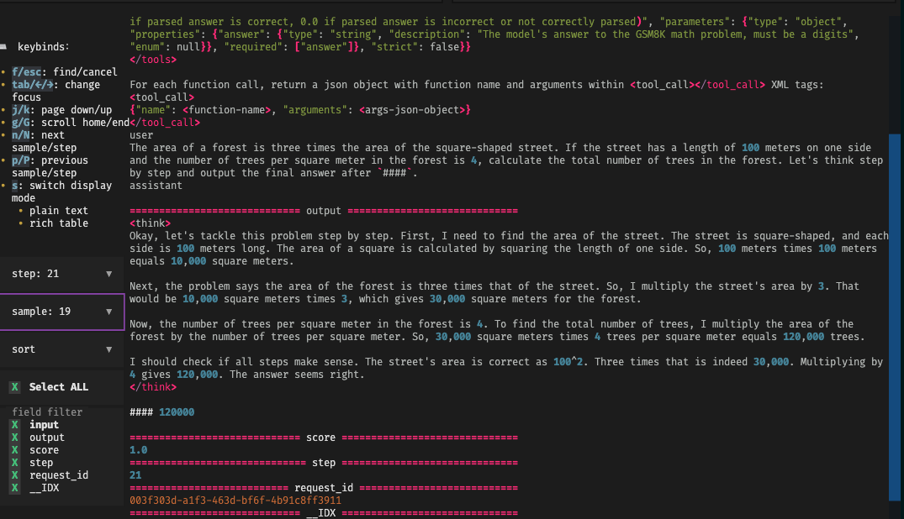
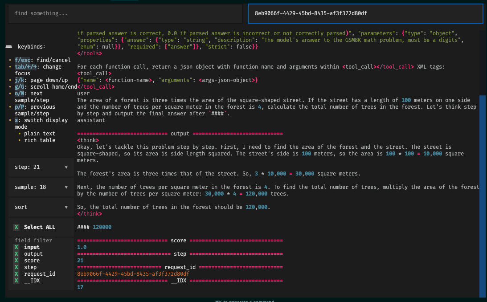

TUI: A Rollout Viewer for Multi-turn RL
Thanks to the contributions from Xiaohongshu, we've developed a visualization tool called TUI. Specifically, we've implemented rollout_viewer.py, an interactive JSONL data Browse tool based on Textual. It displays Rollout log files in rich text format within the terminal, supporting features like pagination, searching, and field filtering.
Acknowledgements: Rui Yang (Xiaohongshu), Chengxi Li (CMU), Huapeng Zhou (UW), Chenyang Zhao (Amazon)
Dependencies
pip install typer==0.16.0
pip install ujson==5.10.0
pip install textual==0.52.1
pip install aiofiles==24.1.0
Configuration
You need to set the rollout data (storage directory) in the configuration, for example:
trainer.rollout_data_dir=$HOME/data/gsm8k/rollout_data
Note: Currently, TUI does not support agent loops. This is because enabling actor_rollout_ref.rollout.mode=async to start the Agent Loop prevents the request ID from being obtained. This issue will be resolved in a future version.
How to Run
# python scripts/rollout_viewer.py <JSONL_directory_path>
python scripts/rollout_viewer.py ./data/rollouts
The program will asynchronously load all files with the .jsonl suffix within the specified directory.
Data Format Requirements
- By default, each
*.jsonlfile represents a step, and the filename must be convertible to anint(e.g.,0.jsonl,1.jsonl...). - The file content should be standard JSON Lines, with each line corresponding to a sample.
- Upon loading, a field
__IDXwill be automatically added to each sample, representing its line number in the current file.
You can find a data example here.
Examples
- Select an exact step and sample, works well:

- Select a right
request_idto search, works well:
